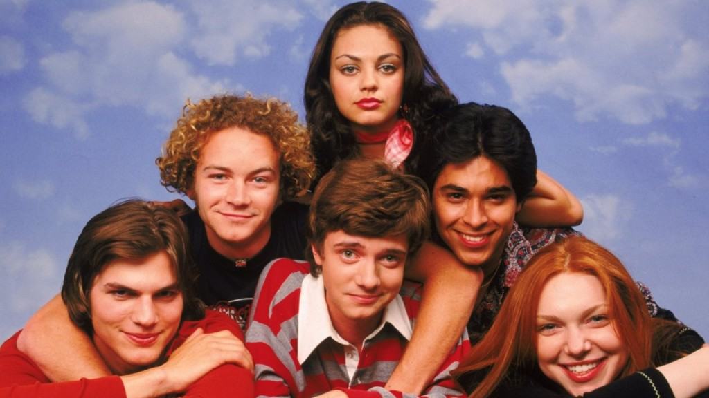

Characters

- Eric Forman
- Eric, the lead character of our series, falls in love with his neighbor. He is very successful in his class,
is under constant pressure from his father, who has eternal love from his mother, who cannot get along with his sister;
We've got a scrawny, caring character. Eric has been in love with Donna, the daughter of Pinciotti’s neighbors since his
childhood, but he hasn't known for a long time that Donna had anything to do with him.
- Donna Pinciotti
- The only children of the Pinciotti next door to the Formans. Eric's family belongs to the American family structure of the 70s.
Pinciotti family is so much out of this mold. Donna's family has a better and more modern family than the Formans. Donna and Eric
were close friends from a small age, and they both liked each other for a long time. Although Donna is a girl, longer than he is,
and usually wrestles with Eric, he manages to overthrow her. Donna's dream is to go to college and become a successful
businesswoman.
- Stephen Hyde
- Our rebellious son Steven. He has had a troubled childhood and family life. A person who likes to criticize more people as a
general philosophy of life. From time to time, the most sane person in the group can be, even though the most inexperienced among
the beloved, they consult with Steven. Steven is Eric's best friend. He is a big fan of Led Zeppelin and Pink Floyd.
- Jackie Burkhart
- The spoiled sanity of our group. She has a rich family, and she's the kind of girl that we call rich and rude, but she's cute.
She annoys his friends and speaks nonstop. Her only purpose in life is to marry a handsome and rich man and live a happy family life.
They're lovers with Kelso and they always hang out together.
- Michael Kelso
- Kelso is the least intelligent character of our group, but he thinks he's more clever than the others. Jackie and him are lovers,
but he's always out of her sight. He's so flirtatious, he has the capacity to irrigate all the girls around him. But Jackie makes
him to do whatever she wants. Kelso is handsome and he likes himself very much. In the future, he dreams to be a model and a rich
man.
- Fez
- He is a foreign exchange student, but we never know which country he comes from. The name is an abbreviation of Foreign
Exchange Student. He's one of the funniest characters in the show, he's never been lucky about love. But he thinks that all
the girls usually desire him. From time to time, he makes us all laugh with a strange and a dream world.